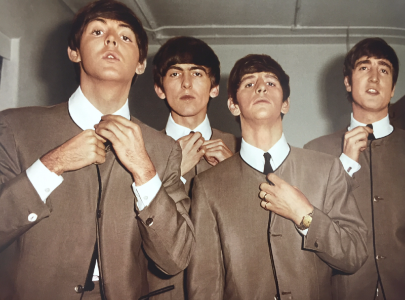

Οι Beatles σχηματίστηκαν στο Λίβερπουλ το 1959 και η αρχική τους σύνθεση περιλάμβανε τους John Lennon , Paul McCartney, George Harisson, Stewart Satcliff(μπάσο και φωνή), και Pitt Best(τύμπανα). Όταν ο John Lennon συνάντησε τον Paul McCartney, ήταν και οι δύο γύρω στα 14 και ο John ελαφρώς μεθυσμένος. "Συνήθιζε να βάζει τα χέρια του γύρω από τους ώμους μου. Η ανάσα του μύριζε, αλλά του έδειξα κάποια μυστικά στην κιθάρα που δεν γνώριζε", έχει πει χαρακτηριστικά ο Paul McCartney για τη γνωριμία τους.
Αυτή η παράδοξη συνάντηση δύο σχολιαρόπαιδων από το Λίβερπουλ στα μέσα της δεκαετίας του 1950 οδήγησε σε γεγονότα που έμελλε να συγκλονίσουν τον κόσμο. Tο πρώιμο ρεπερτόριό τους στηριζόταν σε διασκευές αμερικανικών R&B κομματιών των Chuck Berry και Little Richard. Με την επιστροφή τους από το Αμβούργο στις αρχές του 1961, ο Satcliff αποφάσισε να αποχωρήσει και ο McCartney πήρε το μπάσο. Τον Νοέμβριο του ίδιου χρόνου, ο Bryan Epstein έγινε μάνατζέρ τους και απέδειξε σπάνιες ικανότητες και γι' αυτό τον αποκάλεσαν "πέμπτο Beatle’’.
Τον Ιανουάριο του 1962, οι Beatles ξεκίνησαν την καινούργια τους χρονιά με οντισιόν στη δισκογραφική εταιρία Decca. Ο υπεύθυνος της εταιρίας, Mike Smith, τους βρήκε υπέροχους αλλά ο γενικός διευθυντής Dick Rowe διαφώνησε. Η Decca υπέγραψε με τον Brian Poole και τους Tremoloes. "Τα κιθαριστικά γκρουπ είναι εκτός εποχής. Κύριε Epstein, θα έπρεπε να επιμείνετε πουλώντας δίσκους στο Λίβερπουλ...", τηλεγράφησε ο Dick Rowe στον μάνατζερ των Beatles! Τον Αύγουστο, αντικατέστησαν τον ντράμερ Pitt Best με τον Ringo Star και το Σεπτέμβριο ηχογράφησαν το πρώτο τους τραγούδι, το ιστορικό "Love Me Do" με παραγωγό τον George Martin που σύντομα θα απολάμβανε τη φήμη του "πέμπτου Beatle". Τα "Σκαθάρια" προετοίμαζαν την θριαμβευτική είσοδό τους στη μουσική σκηνή και ετοιμάζονταν για την μεγάλη εξόρμηση του 1963. Καθιέρωσαν το image με το ιδιαίτερο κούρεμά τους και τα σακάκια δίχως κολάρο.
Η καριέρα τους άρχισε να εξελίσσεται με ιλιγγιώδη ταχύτητα από τον Ιανουάριο του 1963 όταν κυκλοφόρησε το δεύτερο single "Please Plese Me" και έφτασε στο Νο 1 του βρετανικού τοπ. Το πρώτο τους άλμπουμ με τον ίδιο τίτλο έμεινε για 30 εβδομάδες στο Νο 1 της Αγγλίας, για να αντικατασταθεί το 1964 από το "With The Beatles", που έμεινε στην κορυφή για 22 εβδομάδες. Με την κυκλοφορία του άλμπουμ τους ''With The Beatles'' καθιερώθηκαν όροι όπως "Merseybeat" (για τη μουσική τους) και "Beatlemania" (για την υστερία που προκαλούσαν, ειδικά στο γυναικείο πληθυσμό). Έπαιζαν πλέον στα μεγάλα κλαμπ του Λονδίνου (Palladium, Royal Albert Hall), εμφανίζονταν στο εθνικό τηλεοπτικό δίκτυο και το Νοέμβριο του 1963 έπαιξαν για τη βασίλισσα, αποδεκτοί πλέον από το κατεστημένο κι έχοντας γεφυρώσει το… "χάσμα των γενεών".
Η ‘’Beatlemania’’ με τα ιδιαίτερα χαρακτηριστικά της εξαπλώθηκε σταδιακά μετά την Ευρώπη στην Αμερική. Όταν έφτασαν στη Νέα Υόρκη (7 Φεβρουαρίου του 1964), τους περίμεναν στο αεροδρόμιο χιλιάδες θαυμαστές και θαυμάστριές τους και διαδραματίστηκαν σκηνές υστερίες οι οποίες συνεχίστηκαν και στο ξενοδοχείο Plaza όπου κατέλυσαν. "Παίρναμε 12.000 γράμματα την ημέρα!", έλεγε αργότερα ο Ringo. Την ίδια εξέλιξη είχε και η περιοδεία τους στην υπόλοιπη Αμερική. Στην Ουάσινγκτον, όπου ταξίδεψαν με ιδιαίτερο πολυτελέστατο βαγόνι, 2.000 θαυμαστές πολιόρκησαν το σταθμό. Οι εμφανίσεις τους προκαλούσαν τόση υστερία που αποτελούσαν μεγάλο πονοκέφαλο στην αστυνομία.
Η 15η Αυγούστου του 1965 ήταν μία ιστορική βραδιά για τους Beatles στην Αμερική. Το Shea Stadium γέμισε με περισσότερους από 60.000 θεατές. Ποτέ έως τότε συναυλία δεν είχε συγκεντρώσει τόσο πολυάριθμο κοινό. Η θρυλική αυτή εμφάνιση κατέρριψε ένα ακόμη ρεκόρ της show biz. Tα έσοδα της βραδιάς ανήλθαν σε 304.000 δολάρια, ποσό πρωτοφανές για την εποχή. Για να τηρηθεί δε κάποια στοιχειώδης τάξη στους έξαλλος θαυμαστές, χρειάστηκαν 2.000 άνδρες ασφαλείας, εκτός από τις αστυνομικές δυνάμεις.
Τον Οκτώβριο της ίδιας χρονιάς, οι Beatles προσκλήθηκαν στα ανάκτορα του Μπάκιγχαμ. Η βασίλισσα τους απένειμε το τιμητικό μετάλλιο MBE (Members of British Empire) -το οποίο έως τότε κατείχαν μόνον ήρωες πολέμου- για την προσφορά τους "στην προβολή της Βρετανίας στο εξωτερικό".
Σταδιακά οι Beatles άρχισαν την παραγωγή πιο περιπετειώδους μουσικής, που οδήγησε σε δίσκους σαν το Rubber Soul και το Revolver. O Χάρισον πειραματίστηκε για πρώτη φορά με το ινδικό έγχορδο σιτάρ στο "Norwegian Wood". Tο καλοκαίρι του 1966, κατά τη διάρκεια περιοδείας του συγκροτήματος στην Αμερική, ο John Lennon δήλωσε στην Evening Standard του Λονδίνου ότι οι Beatles είναι ‘’ πιο διάσημοι από τον Ιησού’’, προκαλώντας κατακραυγή και θύελλα αντιδράσεων. Η κατακραυγή εντάθηκε όταν ο Paul McCartney παραδέχθηκε στην τηλεόραση ότι έχει πάρει LSD. Τίποτα όμως δεν μπορούσε να σκιάσει την ακατάλυτη σχέση λατρείας ανάμεσα στους Beatles και το κοινό τους. Το Φεβρουάριο του 1967, με την κυκλοφορία του single ‘’Penny Lane’’ και ‘’Strawberry Fields for Ever’’, που κατέλαβε την δεύτερη θέση του βρετανικού τσαρτ, ο Τύπος βιάστηκε να σχολιάσει "Κοιμούνται οι Beatles?". Λίγους μήνες αργότερα, πρόσφεραν το σημαντικότερο, κατά πολλούς, επίτευγμα στην καριέρα τους. Στις 2 Ιουνίου του 1967 κυκλοφόρησαν το ‘’Sgt. Pepper's Lonely Hearts Club Band’’ ύστερα από 9μηνη προετοιμασία και περίοδο σιωπής, κατά την οποία το συγκρότημα είχε απομονωθεί αποφεύγοντας συνεντεύξεις και δηλώσεις. Οι φήμες οργίαζαν και το αποτέλεσμα επιβεβαίωσε κάθε αναμονή. Το άλμπουμ αυτό αποτελεί μία εκθαμβωτική σύνθεση μουσικής, στίχων, ήχων, συμβολικών εκφράσεων και κοινωνικών παρατηρήσεων.
Θριαμβευτικά, με το ‘’Abbey Road’’ και το ‘’Let It Be’’ (που ήταν τελικά το τελευταίο τους άλμπουμ, αλλά και το τελευταίο τους ζωντανό), η ιστορία των Beatles έφτασε στο τέλος της. Αιτία ήταν οι εσωτερικές διαμάχες, οι συγκρούσεις, οι ανταγωνισμοί και το ''αγκάθι'' που ακούει στο όνομα Υoko Ono, η οποία είχε εισβάλει το 1966 στη ζωή του John Lennon. Το 1969, λίγο πριν οι Beatles χωρίσουν και ακολουθήσει ο καθένας τη δική του σόλο καριέρα, ήταν η χρονιά του ''Get Back'', του ''Don't Let Me Down'', του ''The Ballad of John and Yoko'' και του ''Abbey Road'' (το τελευταίο άλμπουμ αποτέλεσμα στενής συνεργασίας και των τεσσάρων μαζί). "Ο John και η Yoko? Πολλοί νομίζουν ότι είναι τρελοί. Αλλά αυτός είναι ο John!", σχολίασε ο Ringo Star. Ούτως ή άλλως το 1969 ήταν η χρονιά τους: Διαμαρτυρίες για την ειρήνη, ναρκωτικά (συνελήφθησαν γιατί βρέθηκε στην κατοχή τους κάνναβη), μετακινήσεις και ταξίδια. Το αποκορύφωμα ήταν ότι στις 25 Νοεμβρίου ο Τζον Λένον επέστρεψε στη βασίλισσα το τιμητικό μετάλλιο (MBE, Members of British Empire) -το οποίο τους απένειμε τέσσερα χρόνια νωρίτερα- διαμαρτυρόμενος για την ανάμειξη της Βρετανίας στην Μπιάφρα και το Βιετνάμ. Χειρονομία που θεωρήθηκε μεγάλη προσβολή.
Οι "Υπέροχοι Τέσσερις" ακολούθησαν προσωπικές καριέρες με αρκετές αξιόλογες στιγμές, που όμως ποτέ δεν πλησίασαν την ακεραιότητα του Beatle-ικού καλλιτεχνικού οράματος. Στις 8 Δεκεμβρίου 1980 ο Lennon δολοφονήθηκε έξω από το σπίτι του στη Nέα Yόρκη από τονMarc Chapman. Ο θάνατός του σήμανε και το οριστικό τέλος μίας μεγαλειώδους και μοναδικής στη μουσική σκηνή πορείας. Oι Beatles αγαπήθηκαν από κοινό και κριτικούς, οι οποίοι ύμνησαν το ιδιαίτερο στιλ και το αδιαμφισβήτητο ταλέντο τους: "Μετέτρεψαν τη ροκ σε αξιοσέβαστο μουσικό είδος", "οι στίχοι τους μίλησαν πρώτοι για τον ρατσισμό, την αποξένωση, το άγχος της μεγαλούπολης, την επανάσταση, την αγάπη, την κατανόηση", "τέλειες μελωδίες, άψογες ενορχηστρώσεις".